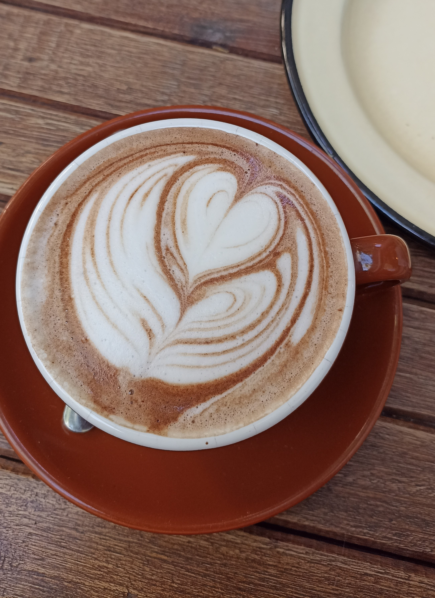

Rutas del Café: Recorriendo Montevideo

Bienvenidos a "Rutas del Café: Recorriendo Montevideo," una experiencia única para los amantes del café que desean explorar la vibrante cultura cafetera de esta hermosa ciudad costera. En esta sección, te invitamos a embarcarte en un emocionante viaje por las calles de Montevideo, donde el aroma del café recién tostado se entremezcla con la rica historia y la hospitalidad de Uruguay
Acompáñanos mientras descubrimos los rincones más encantadores de Montevideo, desde acogedoras cafeterías con vistas al mar hasta tradicionales tostadurías donde el café se tuesta con pasión y experiencia. Te guiaremos a través de las mejores paradas para disfrutar de una taza de café perfectamente preparada, aprender sobre los métodos de preparación locales y sumergirte en la cultura del café de Montevideo.
Acompáñanos mientras descubrimos los rincones más encantadores de Montevideo, desde acogedoras cafeterías con vistas al mar hasta tradicionales tostadurías donde el café se tuesta con pasión y experiencia. Te guiaremos a través de las mejores paradas para disfrutar de una taza de café perfectamente preparada, aprender sobre los métodos de preparación locales y sumergirte en la cultura del café de Montevideo.
Los cuatro barrios de Montevideo con más movimiento cafetero
En Punta Carretas, encontrarás una ecléctica mezcla de cafeterías que van desde las modernas y vanguardistas hasta las más tradicionales. Sus acogedores rincones y terrazas con vista al mar invitan a los visitantes a disfrutar de tazas de café artesanal, acompañadas de exquisitos postres y bocadillos.
Pocitos, otro encantador barrio de Montevideo, se presenta como un auténtico paraíso para los amantes del café. Con su combinación de modernidad y tradición, Pocitos ofrece una experiencia única en el mundo de las cafeterías. En este barrio descubrirás una amplia variedad de cafeterías que reflejan la diversidad y el espíritu acogedor del barrio.
Palermo, un pintoresco barrio de Montevideo, es un rincón acogedor y lleno de encanto que también ofrece una experiencia especial para los amantes del café. Con su estilo bohemio y su ambiente relajado, Palermo se ha convertido en un enclave ideal para explorar la cultura cafetera en la capital uruguaya.
Carrasco, uno de los barrios más exclusivos de Montevideo, también tiene su propia oferta en cuanto a la cultura del café. Este elegante y sofisticado vecindario a orillas del Río de la Plata ofrece una experiencia cafetera de alta gama para aquellos que buscan disfrutar de su taza de café en un entorno lujoso.